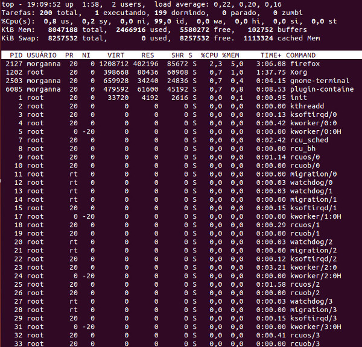

top
top [opções]
Descrição
Este utilitário exibe informações sobre os processos
que estão sendo executados.
Algumas opções do comando
- -c : mostra a linha de comando ao invés do nome do programa.
- -d num : atualiza a tela após num segundos (o padrão é 5 segundos).
- -h : exibe as opções do utilitário.
- -p pid : mostra apenas o processo com o PID especificado
- -v : mostra informações sobre o utilitário.
Teclas do aplicativo
- espaço : atualiza imediatamente a tela.
- h : ajuda.
- k : encerra um processo (comando kill). Será solicitado o PID do
processo e o sinal a ser enviado ao processo. O sinal 15 provoca o término normal do processo, enquanto o sinal 9 provoca o
término forçado do processo. O padrão é o sinal 15 (SIGTERM).
- M : ordena processos de acordo com o uso da memória.
- n ou # : altera a quantidade de processos a serem apresentados na tela. É solicitada a entrada de um número. O valor
padrão é zero que corresponde ao número de processos que a tela pode suportar.
- P : ordena processos de acordo com o uso de CPU.
- q : encerra o aplicativo.
- r : altera a prioridade de um processo (comando renice). Será solicitado o PID
do processo e o valor da nova prioridade a ser usada pelo processo (o valor padrão é 10). O usuário
comum só pode informar um valor positivo maior que a prioridade atual. O root pode informar qualquer valor
entre -20 (maior prioridade) e 19 (menor prioridade).
- s : altera o tempo entre as atualizações de tela. É solicitada a entrada do tempo de espera em segundos.
O valor zero corresponde a atualização contínua. O padrão é 5 segundos.
- T : ordena processos de acordo com o tempo de execução.
- u : exibe os processos de um determinado usuário. É solicitada a entrada do nome (login) do usuário. O padrão é branco
(todos os usuários).
Exemplo
O comando
top -d 10
inicializa o aplicativo top e atualiza as informações apresentadas a cada 10 segundos.

Para ver apenas as informações apenas do processo 1 (init), digite
top -p 1
Abaixo é mostrada uma possível saída para o comando.

Observações
- O comando ps exibe informações sobre os processos que estão executando
na máquina.
- O comando pstree apresenta, em formato de árvore, os processos em execução